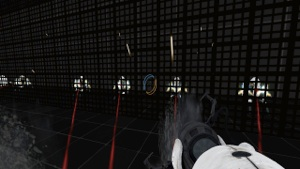
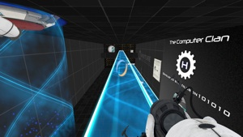

These are Portal 2 custom maps that are developed by the Computer Clan.
|  |  |
|---|---|
| Turret Doom - Level 3 | Beginner's Luck - Level 2 |
All of the Portal 2 maps listed on this website or developed by the Computer Clan. It is optional for the CC members to put logos, credits, and other information in their maps, however, it is not mandatory. The levels that are in the title link for the map indicate a skill level out of a scale of 1 through 10. If a map is a playground map, it will be labeled as N/A. The downloads are in a ZIP format. Once you open the ZIP, you will get a folder with the map name. Inside the folder are the materials for the map, an instructions file, and the map file itself.
Portal 2, Source Engine, Hammer, and all of the logos are registered trademarks of Valve Corporation.